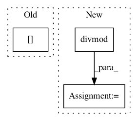

bf88d86823461be7a9b4837f56171d87aa3d2d8d,spynnaker/pyNN/models/utility_models/delays/delay_block.py,DelayBlock,add_delay,#DelayBlock#Any#Any#,36
Before Change
def add_delay(self, source_id, stage):
word_id = int(source_id / 32.0)
bit_id = int(source_id - (word_id * 32))
self.__delay_block[int(stage - 1)][word_id] |= (1 << bit_id)
@property
def delay_block(self):
After Change
:param int source_id:
:param int stage:
word_id, bit_id = divmod(source_id, 32)
self.__delay_block[int(stage - 1)][word_id] |= (1 << bit_id)
@property
def delay_block(self):
In pattern: SUPERPATTERN
Frequency: 4
Non-data size: 3
Instances
Project Name: SpiNNakerManchester/sPyNNaker
Commit Name: bf88d86823461be7a9b4837f56171d87aa3d2d8d
Time: 2020-01-16
Author: donal.k.fellows@manchester.ac.uk
File Name: spynnaker/pyNN/models/utility_models/delays/delay_block.py
Class Name: DelayBlock
Method Name: add_delay
Project Name: SpiNNakerManchester/sPyNNaker
Commit Name: aead350a3a89aa229b75b5f712c06203d313a48b
Time: 2020-01-16
Author: donal.k.fellows@manchester.ac.uk
File Name: spynnaker/pyNN/models/utility_models/delays/delay_block.py
Class Name: DelayBlock
Method Name: add_delay
Project Name: pymc-devs/pymc3
Commit Name: 66d21e1fcd43323289840ce83e4193e6b9957d0c
Time: 2017-11-21
Author: junpeng.lao@unifr.ch
File Name: pymc3/sampling.py
Class Name:
Method Name: sample_ppc
Project Name: scipy/scipy
Commit Name: f35c4cc54fd9fa0e373127c76028275ce7c588e5
Time: 2020-07-10
Author: keaton.burns@gmail.com
File Name: scipy/sparse/construct.py
Class Name:
Method Name: block_diag